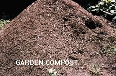
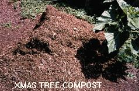
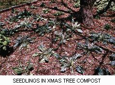

But what is the gardener to do whose property is on 27 foot of sand. Soil amendments will disappear like money in a wishing well. Sand is a bottomless pit. Similarly, gardeners who live on clay or mostly rock have difficulty incorporating the standard formula for amending the soil because their soils are very hard to work and even harder to mix with other materials. My own property is yellow clay. In the spring, it is soft mud, because it will not drain. In the summer, it may as well be granite. Until the first of June, seeds and transplants alike must be placed on the surface of the soil, then mounded over to cover, in order to avoid immediate rot.
The answer for some of these poor drainage conditions, as we all know, is raised beds. We understand how they will drain better, and warm up faster in the sun, etc. Then, as we are wondering where the soil for raised beds is going to come from, the authors describe the hilling attachments on their garden tillers, and show nice photos of neat raised beds in their loamy gardens. If you have nice loamy soil to begin with, you would be able to produce decent crops without going to the trouble of making raised beds. For the rest of us gardeners, making a raised bed usually requires the construction of a frame to hold the soil we steal from elsewhere on the property (amended with compost, etc.) or have purchased from the local nursery. We fill the frames with expensive materials, only to watch with horror as the improved drainage includes the leaching away of our soil. Year after year, we fill up the beds again with dollars flying by like dancing butterflies. The soil does not wash out of my raised beds. Read on, and find out why.
For some time I had been getting truckloads of wood chips from my municipal public works department. I further ground these up in my shredder in order to get the wet green stuff (yard and garden waste) to go through the screens without gumming up. So, it was two corn stalks followed by one fork full of chips, and so on. The resulting mixture served as a great mulch around the shrubs, and a good fill for depressions, etc. I would never plant anything in it because all the magazines said that decomposing wood requires more nitrogen than the surrounding soil can supply, and there would be none for the plants. Further, they said you could not grow cucurbits and melons within a yard of wood chips, or they would shrivel up and die. Further, they said that you would never want to do this anyway because everone knows that wood chips create acid soil. I believe those adages to be incorrect, first, on a theoretical basis, and second from personal experience.
The theory that wood chips and pine needles and oak leaves create acid as they decompose has to have been invented by someone who is still confused by the chicken first, or egg first controversy. In nature, all decisions are based on natural selection over time. If the largest concentration of pine forests or oak forests happen to be found where the soil tends to be more acid than not, does that mean that the acidity was somehow formed by the trees? Of course not; when tree seeds are distributed by nature, those that land and germinate in areas which are favorable to their growth are going to thrive. So, as a general rule, plants of all description are going to do best in areas where they grow and reproduce the best, i.e., the plants selected the soil, not the other way around. It is just too easy to assume that because oak and pine trees prefer acid soils, that their decomposing leaves created the acidity in the soil. Those soils were acid before the trees got there, or the trees would not have thrived and created forests. Flying in the face of reported science, these opinions would probably not hold up to laboratory analysis in a test tube. But as a practical matter, your garden is your laboratory, and the results obtained there will determine what you prefer to believe. My experiments with soil amendments and Blueberry bushes indicate that changes in soil Ph can only be obtained with corresponding changes in the mineral content of that soil. Mulches composed of garden wastes, garden compost, leaf mold, composted wood chips, or any composted biodegradable materials found on your own property, will never create any significant long term change in the Ph of your soil.
One January, the public works department offered me a load of ground up Christmas trees. I accepted thinking that I could always use some more mulch. Some of it I put in raised beds that I had constructed, just to get it out of the way quickly. Some of it was put in large utility areas for storage. The rest, I used as pathways in my veggie garden. At the end of that summer, I noticed that my pathways had richer looking soil than my garden beds. As I had not run this material through my own shredder, the wood chips were large and prominent, and they made a stable path. So, that September, at garlic planting time in Chicago, I put all my garlic cloves in a four inch deep bed of this material which was sitting on Agrimat cloth, so there was no actual contact with the soil. In the following spring, I planted ornamentals in similarly situated beds as an experiment. I also planted some of each type of transplant in adjacent beds with my best garden soil, for comparison. To my surprise, the following July, I harvested the biggest garlic cloves I had ever seen. And the ornamentals in the good garden soil never attained the size, nor did they flower as early, as those planted in the composted Christmas tree soil. I measured the Ph at 6.5, not very acid, I thought. Take note that in the absence of soil, the decomposed pine needles and chips had a Ph very close to neutral. It turns out in fact, that there are few, if any, materials whose Ph differs from neutral when fully composted.
The following January, and every year since, I have obtained all of the Christmas trees that my city collected, then ground up. I run them through my own shredder to further reduce the size of the woody parts, immediately if the weather is nice, or later in the summer; it seems not to matter much. This material is then spread out at a depth of 18 to 30 inches, so that the water will not run off, and the pine needles can decompose rapidly. Weather permitting, this chore can be finished by February 15th as I only get about 12 cu. yards. As the years pass, I continually marvel at the improvement in every area of my gardens. The composted firs, spruces, and balsams create a loamy friable soil that holds moisture without being wet. Plants grown in this medium, with no fertilizer added, outperform their brothers and sisters grown in compost amended garden soil, in every category, from root structure to flowering to wind resistance. There is only one downside that I noticed. That is, the soil is so loose that medium sized top heavy plants which would normally not require staking in heavy soil, must be staked in order to remain upright in loose soil. During 1996, out of curiosity and perhaps as a public service, I grew lime loving brassicas and wood hating cucurbits (with excellent results) in Christmas tree soil to prove my point. That is, if you haven't the good soil of the gardening magazine authors, make it yourself! And, if your soil is impossible to work with, don't bother. Make your own soil and garden on top of the land.


If the photos were not labeled, could you tell the difference? The Xmas tree compost is looser (more friable); it drains faster, but will not dry out.

Seedling perennials transplanted to Xmas tree compost grow faster, bloom earlier, and are very easy to lift next spring for transfer to their permanent location.
Do not confuse the manufacture of soil with the use of mulch. Composting wood chips, with or without leafy green matter, at depths of 6" to 36" creates conditions under which nothing will grow. Do not situate compost piles within the driplines of your trees, because you will be depriving your tree roots of oxygen. Put your compost piles in areas where there is full exposure to rain and sunshine in order to get faster conversion to soil.
Any wood chip mixture can be used as mulch, however, the depth of the material should not exceed 2 to 3 inches, as its only purpose is to prevent moisture loss from the soil. I do not recommend that plant crowns be covered with wood chip mulches at any time. Straw is a better covering for winter protection of tender perennials.
One caveat: the first time I approached the public works department for wood chips, they answered that they were grinding up tree prunings, some of which were diseased, and I certainly would not want that. The next time, the excuse was that their shredder passed the slim branches through without cutting them, and the material would be useless as mulch because I could not fork it, being such a tangled mess. The next time, the truth came out; they didn't want to drive a dump truck onto private property because of the liability in the case of damage or injury. Finally, out of desperation, I wrote a letter to the mayor. I pointed out that they were spending a lot of my money taking this material to the landfill. Needless to say, the letter worked wonders. And, the Director of Public Works turns out to be a really nice guy. So, if you get those kinds of answers, you know what to do. It helps if you can mention that you have your own shredder, and that you will be combining this material with all of the land waste generated on your property, further saving the land fill from an early retirement.
If your public works department does not cooperate or does not grind up Christmas trees, you can collect them yourself from the curb between Christmas day and January 15th. You can load a sided 4 x 8 ft trailer with about 15 trees at a time, without having to tie anything down. When you are ready to process the trees, hack off the branches with a hand axe or a machete. Do not run the tree trunks through your shredder at this time. Save them to make bean towers or other vine supports. Grind them later when you need mulch rather than soil. It will take about 60 trees to make 2 cu. yds. of soil.
The advertisements for shredders show people grinding tree prunings and shredding leaves, etc. I don't use my 7 hp chipper/shredder in this manner. During the growing season, I run garden and yard wastes through the shredder with the screen removed, so that no chips have to be added to keep it from jamming up with wet green stuff. This broken up material is then put in the compost pile(s). The following summer, the compost pile(s) contents are run through the shredder again, without screen. By fall, this material has composted well enough for spreading directly on the veggie garden, though I do screen it first. Leaves that are collected are put into the compost pile as they are, and they break down just as fast as shredded leaves in this situation. As for the tree prunings, why bother. I put them out on the curb for chipping by the city. Sure, I have the capability to chip them myself, but if I need wood chips, the city will deliver to me by the truckload, and I can fork them around a lot faster than running the branches through my own chipper one at a time.
In Humus no. 20, July/August 1988, Edith Smeesters wrote an article entitled Une Mine D'Or:Le bois rameal fragmente, (A Gold Mine: chipped wood branches).
She extolls the virtues of chipped wood branches, especially bois d'ete, or summer wood, which in combination with its leaves can have a C/N ratio as low as 25 to 1.
(Heartwood from the main trunk can be as high as 300-600 to 1, and heartwood also has more of the chemicals wood makes to resist decomposition). We're talking about branchwood of three inches in diameter or less.
A team in Quebec has been studying the use of wood chips since 1978, for the Ministry of Energy and Resources. They even have a patent on some of these uses, although not for economic reasons, it seems.
One point of interest is that wood chip mulch actually raised the pH in studies, contrary to the usual "Wood chips? Omygawd they'll make yer soil too acid" sort of talk you hear in some circles.
A few other results:
Over a five year period in market gardens, increased yields of 50-300% from a single application of two inches of chips plus either hog manure or poultry manure;
Better tasting strawberries; more dry matter in potatoes;
Reduced aphid and nematode populations in strawberries;
Better root development and much more mycorhizal development;
Increase in pH and reduction in weeds.
The group doing this research consisted of:
Justin Brouillette of MMENVIQ, Antonio Gonzalez of the Center for Forest Research of the Laurentides, Edgar Guay of the University of Laval, Christian de Kimpe of Agriculture Canada, Lionel Lachance of the Ministry of Energy and Resources, Gilles Lemieux of the University of Laval and Harold Tremblay of the Ministry of Energy and Resources.
One of several studies cited is E. Guay, L. Lachance, A. Lapointe, G. Lemieux, Dix ans de travaux sur le cyclage biologique du bois rameal, MER, Quebec, 1987 [Ten years of work on the biological cycling of branch wood]